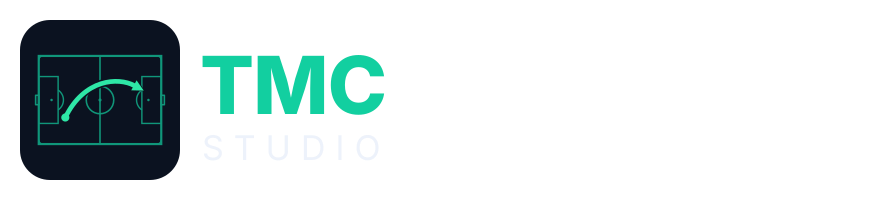
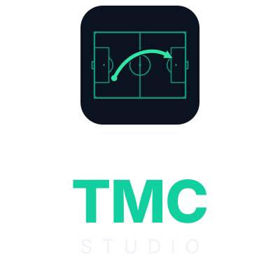
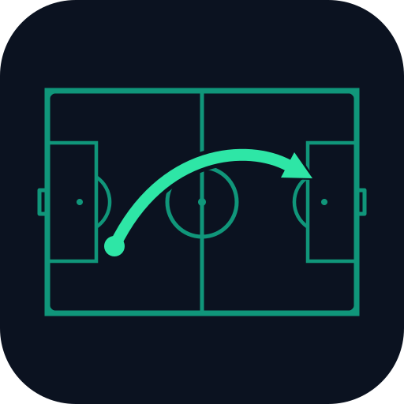
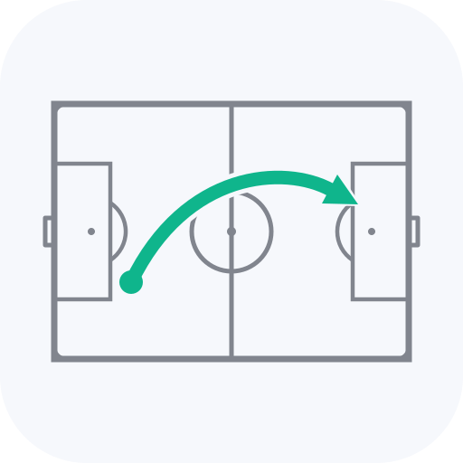
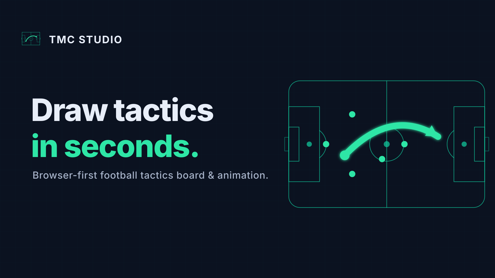

Tactical Board & Animation — by Tactics Made Clear.
Wersja 1.0 · oficjalny dokument marki.
Błyskawiczna, działająca w przeglądarce tablica taktyczna dla trenerów, analityków i twórców. Rysujesz formacje, animujesz akcje i eksportujesz w sekundy — bez instalacji i bez konta.
„Narysuj dowolną taktykę w 30 sekund"
EN: Draw any tactic in 30 seconds.
Tactical Board & Animation · by Tactics Made Clear · Browser-first tactics board
Tactical & Confident — szybko, konkretnie, bez waty. Mówimy językiem boiska, nie marketingu. Klawiatura przed myszą. Pokazujemy produkt, nie obietnice.
Znak: ciemny, zaokrąglony kwadrat z boiskiem (teal) i pojedynczą jasną strzałką taktyczną (mint). Wordmark: TMC (800) + STUDIO (letter-spacing).
Horizontal — primary (nav, nagłówki, stopki, email)

Stacked — kompozycje kwadratowe

Mark — sam znak (avatar, favicon)

On light — na jasnym tle
Akcent Tactical Teal to jedyny kolor akcentu. UI jest dark-first.
Skróty i kod: ⌘K A R N — font monospace (SF Mono / JetBrains Mono).
Inter we wszystkich materiałach. Nagłówki: 800, ujemny tracking. Tekst: 400/600. Liczby tabularne w UI.

Boisko z góry (poprawna geometria) + świecąca strzałka taktyczna na granacie. To główny motyw marki — używany na banerach, OG i materiałach launchowych.